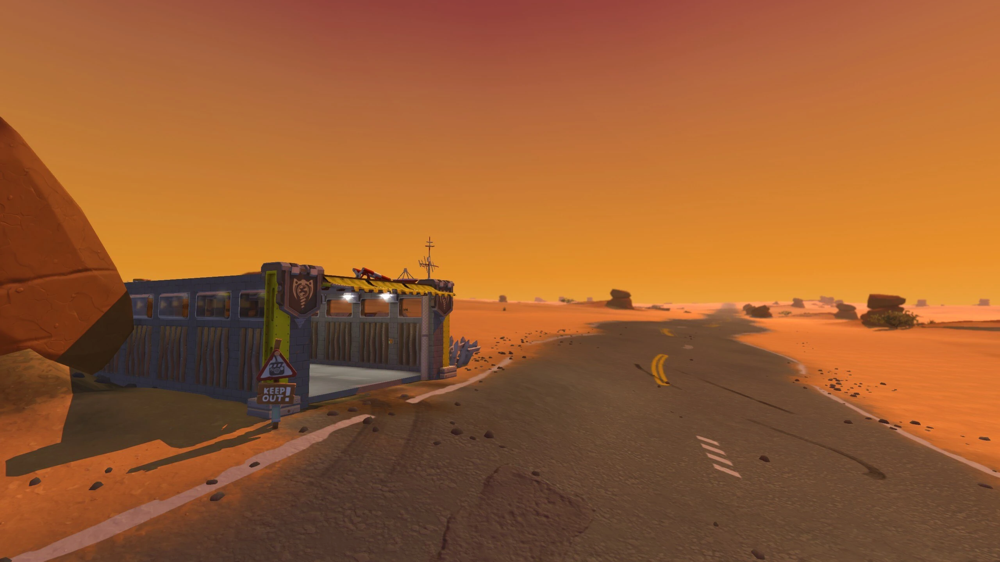
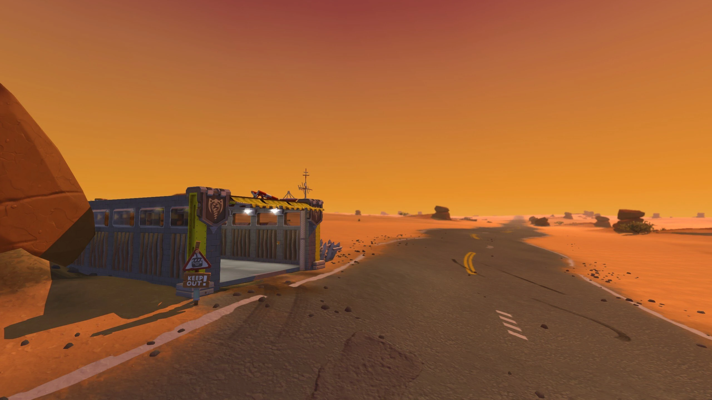
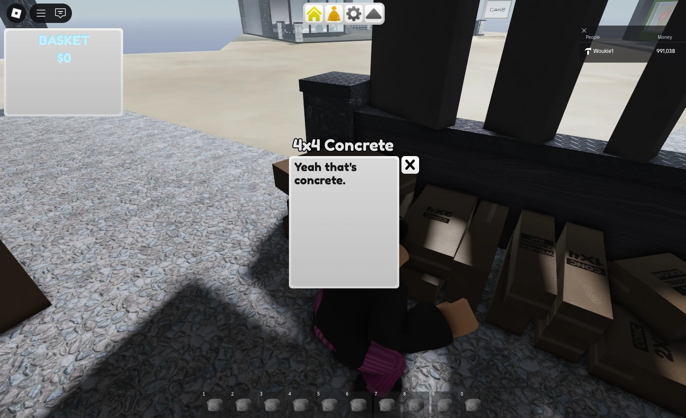

Projects
Here are all my 'fun' projects, mainly game stuff.
Modding
I'm back into modding again, currently working on a ballistic missiles mod for Minecraft.
I'm working with a mechanical engineer to realistically physically simulate trajectories, going as far as simulating even atmospheric pressure, fuel and air resistance.
One of the early-game rocket sets being rendered for the mod icon.
Scrap Mechanic
Made 'Drive', a recreation of 'The Long Drive'. I thought SM's interaction system would complement TLD. Most of the work went into rewriting world generation and loading between worlds during gameplay.
 

My next SM mod comes from when I wanted to play 'Build a Boat for Treasure' with my friends but they called it lame and refused to play it because it's on Roblox. So I read the wiki for it and remade it as a SM mod called 'ScrapFarer'.
This project was tough but fun, it fundamentally changes the gameplay loop of the game, which meant it really pushed the limits of what was possible (hence why it's so buggy). Every single model and texture in the game was modelled/photographed and edited by me.
Despite being more work, it's nowhere near as good as Drive (often the case with these projects). It's way too buggy and not well paced, but that hasn't stopped Scrapman making 5 whole videos on it, along with other YouTubers and streamers, which caused it to get thousands of downloads.
Also made a mod that adds loot boxes to the game, it had a really nice lucky block model.
ROUNDS
Added web image support to another person's map editor mod in order to put pictures of my friends in the game. ~200,000 downloads. It got used by a popular map maker, which absolutely rocketed the downloads.


Also made a Family Guy themed map.


Minecraft
ShrinkRays, Lost Idols, Protein, Shearable Coral and ShrinkDevices, ~27,000 downloads. I'm not updating them.

Also working on Create Missiles now, a ballistic missiles mod themed around Create, which is currently a really popular mod.
That's all you get for now
Rank Everything
A small social experiment where people would add and rank arbitrary things. Pretty fun project shared between friends, had a website at rankeverything.com and even had a mobile app.
Project has since ended and the domain expired.

WoukieBox and WoukieBox 2
The first one was a fun experimental global chatroom that could be deployed on any site that took 10 mins to make. It went down because it wasn't very active, and I forgot about it after a power outage so the backend just died.
The second took 2-3 weeks of my life to develop, and it wasn't just a global chatroom, it had accounts, profile pictures / bios, group chats, DMs, themes, notifications with sound effects, anonymous accounts, a desktop app with an installer, Discord-like messages and even had VOIP in the works.
It was also using ServerPods. Big mistake, because that meant it was really annoying to update and deploy (I was deploying to a VPS with Docker which they only partially support). I was also programming it like it was going to give me money. To be honest, both these projects were a bit of a waste of time.
Roblox
I urge anyone wanting to make a Roblox game to use another engine instead. It doesn't come with a 'built-in audience' as some people are under the impression of. These projects are genuinely some of the only projects I regret.
Generally, Roblox developers are not carried by the merit of their project but by a bidding system which developers use to influence the recommendation system on the site.
The Cube
The Cube is a game where you throw rocks at a big floating cube. Progression was based off Lumber Tycoon 2, with plots, trucks, shops, and having the player progress through projectiles. Had quite a technically interesting system for subdividing the cube as it was destroyed.
There was even a science mechanic where players could infuse and combine projectiles to get different effects. There weren't too many players, but I attribute this mechanic to the fact that a wiki was being made to catalogue all the combinations and their effectiveness.

I even made 5 different music tracks for the shops with different themes and every model was custom made and painted by me. Progression was a bit slow and it wasn't obvious what some things did. The game was 'finished', but it didn't get much attention and I didn't want to buy adverts so I never updated it.
WASPs
The Trello board for this looked insane, the sheer amount of work and time that this sucked from me is crazy looking back on it. This is the reason I regret Roblox development.
A red vs blue attack/defend style game. Defenders protect a 'core' from melee attacks by killing attackers (or wait around the core) to collect money to spend on upgrading and buying blocks. Featured fully custom models, textures and sound effects.
It was never finished, but the prototype was released for people watching the devlogs.
Misc
I've made a few other things that don't need whole sections.
- Ice Climbers, a GMTK game. Was fun to make and I look back on it fondly. I always think back on it whenever I'm in a rut and need to remember I can actually work fast.
- Private radio, an android app that lets me organise and listen to radio streams and circumvent advertisements.
- Minecraft plugins, maps, servers, mods and minigames, mainly for Bukkit, Fabric, Paper and Nukkit.
- Other game stuff that doesn't see the light of day